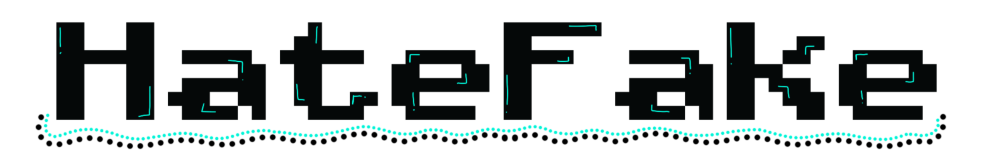

Informatik-AG · Gymnasium Markneukirchen

Deine Ressource zur Erkennung und Bekämpfung von Falschinformationen. Wir bieten eine Plattform, auf der du dich weiterbilden, informieren und selbst testen kannst, wenn es ums Thema Fake News geht. Die gesamte Website ist außerdem Open-Source, das bedeutet, dass der Quellcode vollständig eingesehen werden kann. Transparenz ist für uns kein Versprechen, sondern ein nachprüfbarer Standard.
Wissen aufbauen
Lerne die Grundlagen, um auch in Zukunft sicher und wahrheitsgetreu informiert zu sein.
Zur BildungSelbst ausprobieren
Teste wie gut du schon Fakenews erkennen kannst.
Quiz starten